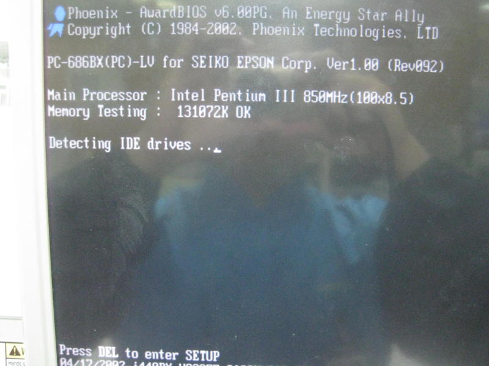
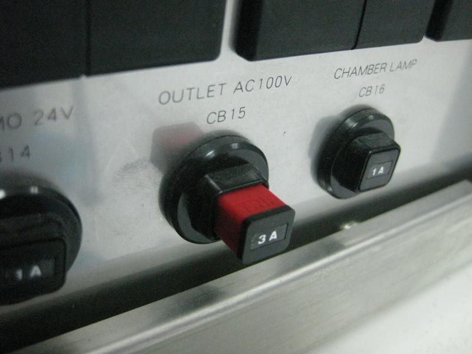
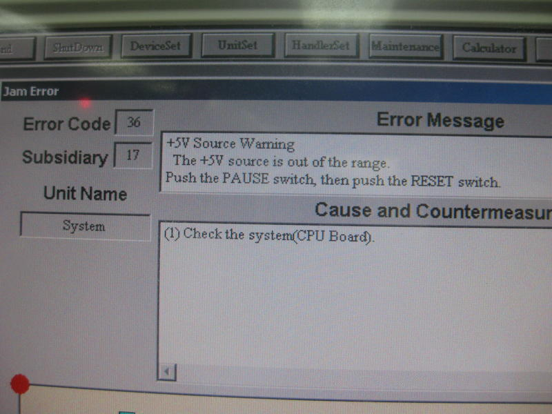
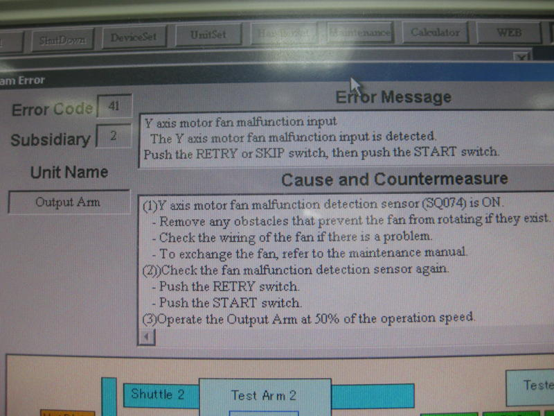
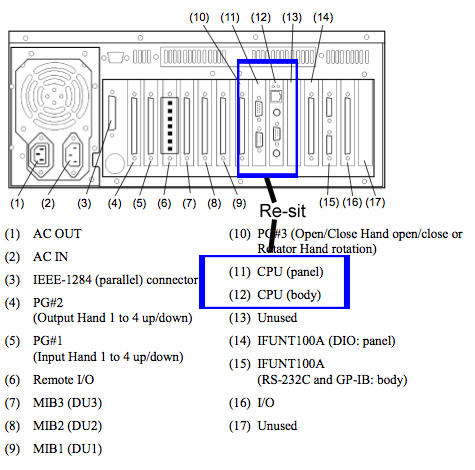
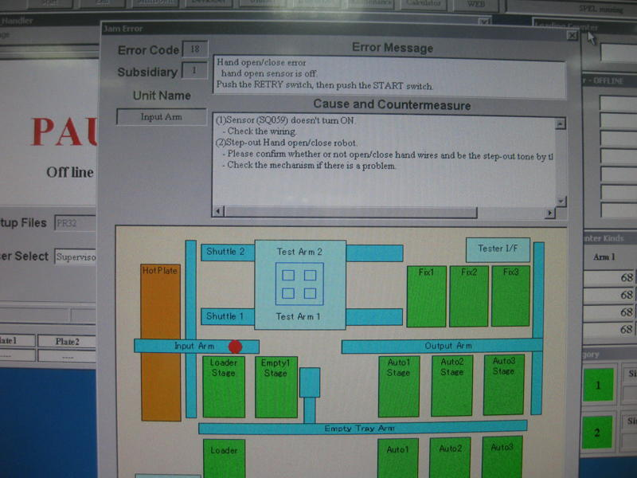
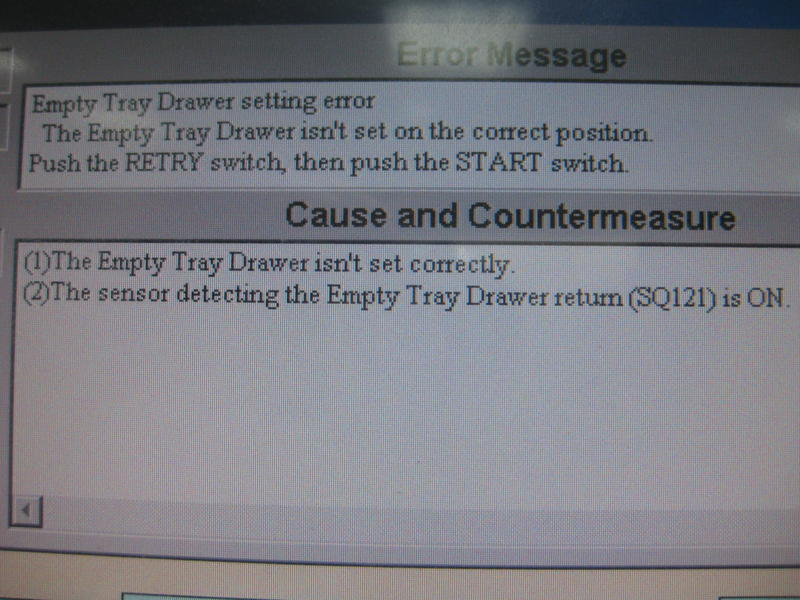
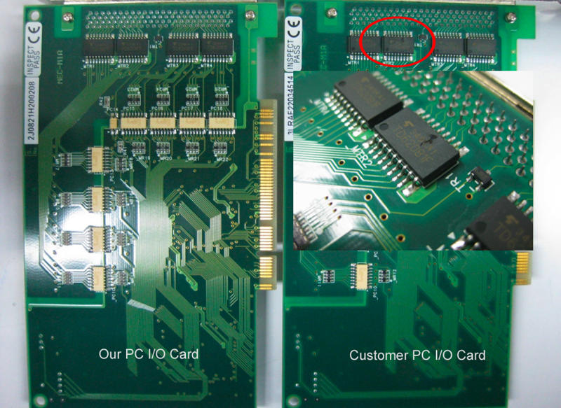

Service History
Subject: NS-7000 cannot boot up and Cover open but handler did not stop
Handler Model: NS-7000 (S/N: 18825, IDT(M))
Controller: RC520
Date: 3 June 2011
Symptom
NS-7000 cannot boot up and Cover open but handler did not stop.
Action
IDT Penang NS02 NS7K 18825 having other issue coming up during last friday night, handler boot-up problem. Below is today troubleshooting details.
1. Checking and reboot the handler, cannot boot-up. Reboot the handler again, this time reboot with recovery CD. Still cannot boot-up. (Using customer original HDD)
2. Change HDD that you and Loh sent and reboot the handler, can boot-up. Setup new file and running 10% speeds with "Dry. No tray" mode, while running the handler, press the [Cover Open] door switch as your requested, still the same. Handler still operational and MMI still show [Cover Open] icon. forget to perform contact height calibration, causing handler Index over work press error. Turn off from operation panel for 10 sec and turn back on. Trying performing contact height calibration, click on [Contact parameter] dialog, mouser arrow key cannot move and keyboard also inoperational. Reboot handler, cannot start at booting. Attachment Figure 1 is the example.

3. Change customer other HDD, boot-up cannot. Again boot-up with recovery CD, okay. Homing the handler, can. Homing the process I also try out pressing [Cover Open] door switch as your requested, still the same. While pressing the [Cover Open] door switch, handler still operational and MMI still show [Cover Open] icon. After homing the handler, setup new file, perform contact height calibration and try run 10% speeds with "Dry. No tray" mode. Handler running about few minutes, error message came up. (About 4 minutes error message came up) After I trying to print-screen the error message by pressing the [Print Screen] key on keyboard. Again the mouser arrow key cannot move and also the keyboard are inoperational. Too late to print-screen the error message. After then monitor sudden black-out and note circuit breaker CB15 have been tripped. PC Controller don't have current. Attachment Figure 2 is the example.

4. Swap back to our HDD, boot-up okay. Homing the handler, can. Homing the process I also try out pressing [Cover Open] door switch. Still the same, handler still operational while pressing the [Cover Open] and also MMI show the [Cover Open] icon. After homing, try run 10% speeds with "Dry. No tray" mode, few minutes later. Heard the air sound "Tot" like pressing the [PAUSE] or [START] botton. Noted the error message came up and mouser arrow key cannot move and also the keyboard are inoperational again. Also monitor sudden black-out and note circuit breaker CB15 have been tripped. PC Controller don't have current. Attachment Figure 3 is the error message. (This time make it to take the error message picture also this HDD run much more long time only error message came up, 8 minutes plus.)


5. Trace CB15 wire diagram, checking the PC Controller, HDD, HDD slot, re-sit the CPU Board refer to attachment Figure 4 and re-sit PC Ram. Try run handler with 10% speeds increase till 80% speeds. After past 15 minutes error message came up again. And mouser arrow key cannot move and also the keyboard are inoperational again. Also monitor sudden black-out and note circuit breaker CB15 have been tripped. PC Controller don't have current. Attachment Figure 5 is the error message. (This show that, handler always intermittent show non real error message and every time show the difference error message even no error "Running" on status also can causing handler monitor sudden black out, CB15 circuit tripped and PC Controller don't have current.) Attachment Figure 6 & 7 is the example.



6. Last trouble-shooting, on "Cover Open" door switch is not function able". Swap the PC I/O card. Still the same, after swap the card, pressing the [Cover Open] the handler still operational and MMI still show the cover door open icon. And I also find out some of customer PC I/O card's IC are cracked. Attachment is the example.

Cause
- HDD spoilt caused cannot bootup
- CB15 tripped and error message came up and mouser arrow key cannot move and also the keyboard are inoperational due to PSU in RC520 not in good condition.
- Cover Open pressed ON but handler does not stop, this is due to VD1 zerner diode on front operation panel burnt, see 0304-NS7K.
Cannot be sure if spoilt PC I/O card caused zerner diode to spoilt.
Remarks
MMI 2.0m the IO Monitor without the COVER OPEN icon, I have checked and it seem this COVER OPEN icon was removed in MMI 2.0m.